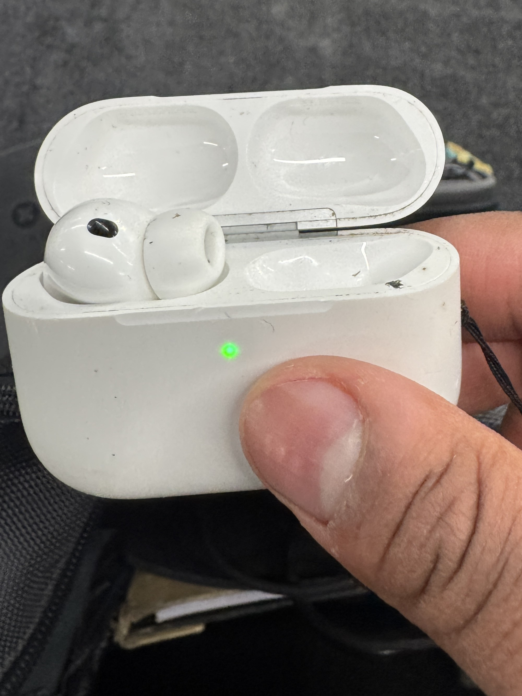

I am alone and understand that I will be alone for the rest of my life. I have accepted this and am at peace with it. Although I desire to change this, I feel that lonliness is an envitablitiy. I will be content with my solitude and find joy in my own company. I am grateful for the moments of connection I have had with others, but I do not feel the hope for constant companionship. I am comfortable being alone and find fulfillment in my own thoughts and activities.
